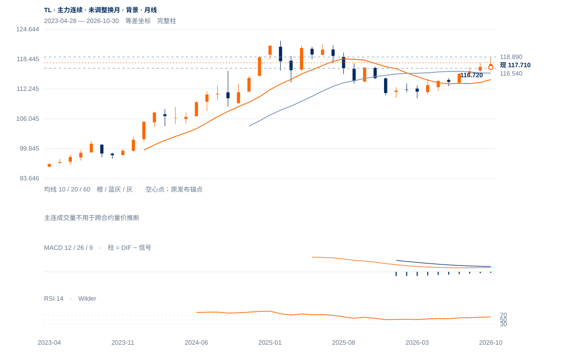

近期撤下重心略改善判断，转为117.47下方偏弱震荡与117.08低区检验，原日收失117.30条件仍按严格低于观察。
TL2703（成交量主力） · 2026-11-25完整收盘
117.47小时失守，117.30平收是否已经失效？
117.300-0.38%
反向量仓跟进与小时失守
分期限展望
未来2—6周下调为2703的117.47下方重建，117.85升级未通过且小时防守已经失去。日收恰117.30与严格低于该线分开，117.08低区及116.11大谷决定继续回吐能否扩大。
未来1—3个月，主连长期修复与实际合约回撤仍可并存，115.542完整20月均衡仅作背景。2703应以116.11—118.60独立峰谷控制方向，移仓集中、空开增加及日内反弹均不替代周级转折。

长期背景
TL自2023年以来主连修复背景仍在，完整10月20月均衡115.542。主力2703以116.11实际大谷和118.60高区判断，25日117.47小时失守只是该区间内的新回撤，跨月不平移价格。 当前日收盘117.300与完整10月月线分开观察；11月尚未结束。
中期结构与新证据
完整周线已更新至11月20日：2026-06-29高114.530（2026-07-17确认）；2026-08-25高116.840（2026-09-11确认）；2026-11-06高118.890（2026-11-20确认）。最新一周与上次11月20日背景分别保存；24日国内与23日美股仅为本周进行中观察。2703收117.300跌0.450，14:00完整小时117.310、15:00为117.160，117.470已失；117.850仅盘中上试，最高117.860而完整小时最高收117.570。日收恰为原117.300，不算严格低于该线。近月减11353、远月增6253，合计减5100；远月空开40568高于多开30468。
确认与失效
先完整小时恢复117.470并后续保持，再核117.850原小时加15分钟升级。
严格日收低于117.300扩大近端破坏，117.080再失增强下行；116.110仍是更大边界。
主要反方
15:15尾段回117.300且116.110大谷仍守；若完整小时重返117.470，可缓解下行，尾段不替代完整小时。
日内与移仓对照


波动与量能
RSI14 47.52；ATR14 0.617；相对量3.23倍